Emplacements
Retrouvez 80 emplacements, dont 62 emplacements (pour votre tente, votre caravane ou votre camping-car) et 18 locations (1 cabane sans sanitaires, 16 mobil-homes et 1 chalet).
Votre prochain lieu de séjour. Nous vous accueillons pour les locations et les emplacements de camping dans une région riche en découvertes et en histoires
Découvrir les solutionsLe camping Les 2 Vallées en Aveyron, sera votre prochain lieu de séjour. Nous vous accueillons du 10 avril au 31 octobre 2027 pour les locations et les emplacements de camping !
Retrouvez 80 emplacements, dont 62 emplacements (pour votre tente, votre caravane ou votre camping-car) et 18 locations (1 cabane sans sanitaires, 16 mobil-homes et 1 chalet).
À 800m du village médiéval de Nant, offrant toutes les commodités, c’est l’endroit parfait pour découvrir Millau, les Caves de Roquefort, les Gorges du Tarn, Rodez et les nombreux sites incontournables de l’Aveyron.
La combinaison parfaite peut accueillir les personnes à mobilité réduite (PMR) de nombreux emplacements de camping sont accessibles, plats et spacieux. De plus, un espace sanitaire privé avec toutes les commodités adaptées est mis à disposition.
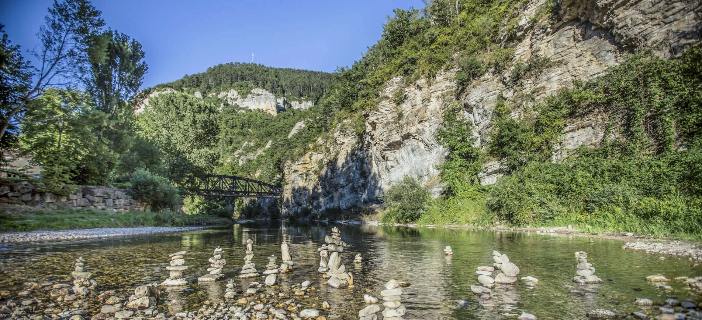
Le camping au bord du Tarn
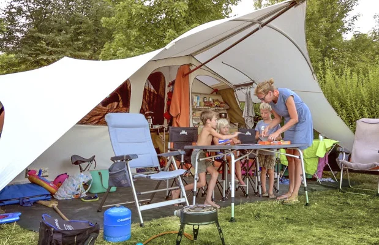
Emplacements spacieux
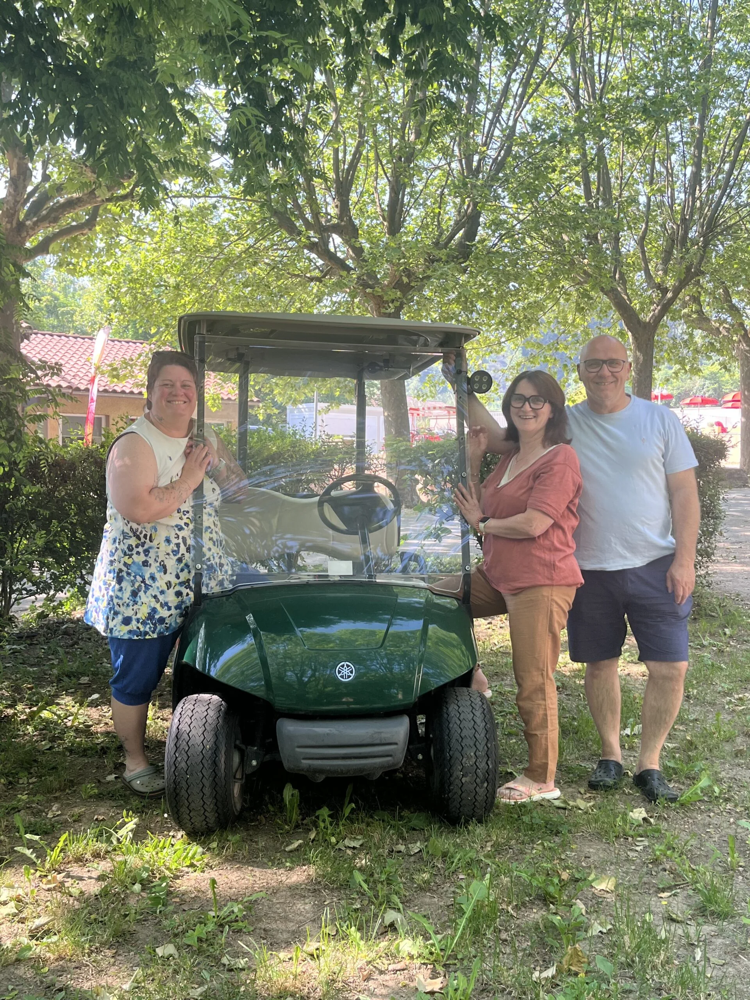
Vue du camping
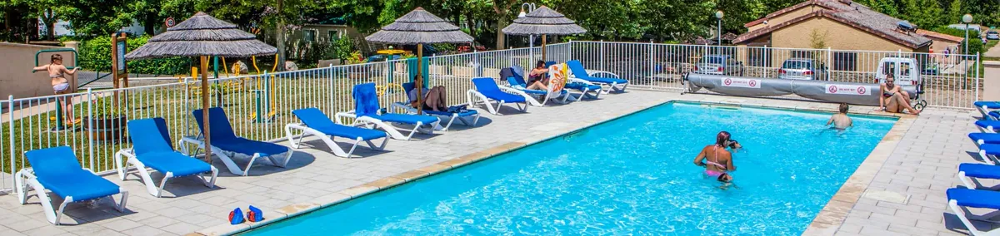
La piscine
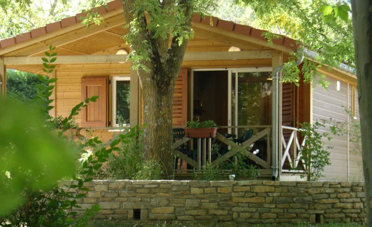
Nos locations

Le chien du camping
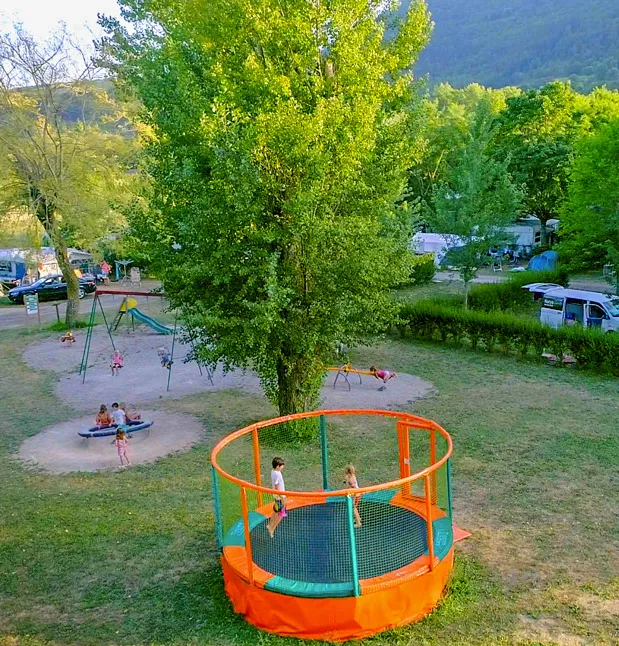
L'espace jeux pour enfants
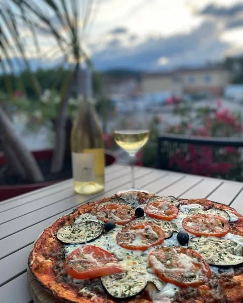
La restauration

Le plan du camping

Les Gorges du Tarn

De mai à septembre, la piscine du camping est ouverte de 9h30 à 20h30. Des chaises longues sont à votre disposition pour profiter pleinement du soleil et de moments de détente au bord de l’eau.
Nous vous proposons des emplacements vide, tente, Mobil-home et Chalet
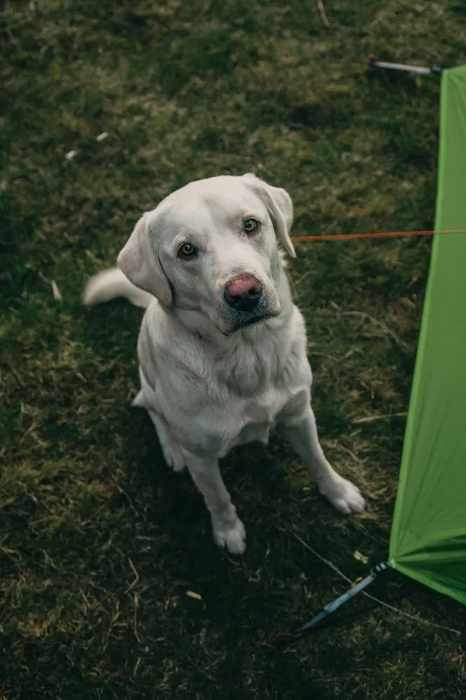
Vos amis à quatre pattes peuvent partager la magie de la nature avec vous, en toute sécurité.

Snack, glaces et produits du terroir : de quoi se régaler sans quitter le camping. Service en salle ou en terrasse, à l'ombre des vallées.

Toboggan, balançoires, table de ping-pong et terrain de pétanque : les enfants s'éclatent pendant que les grands soufflent.

Borne de service, vidange, eau et électricité : tout est prévu pour les camping-cars. Des emplacements plats, spacieux et accessibles.
À moins d'une heure du camping, l'Aveyron déploie ses plus beaux sites.
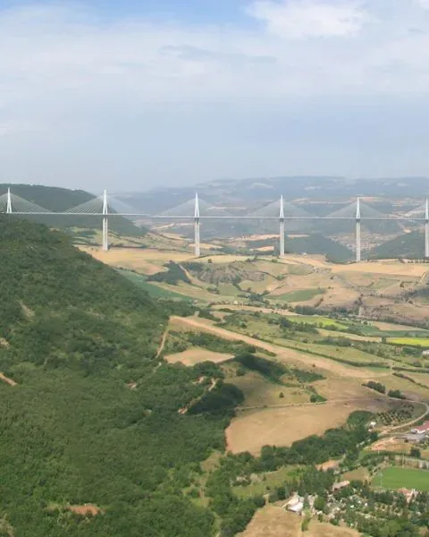
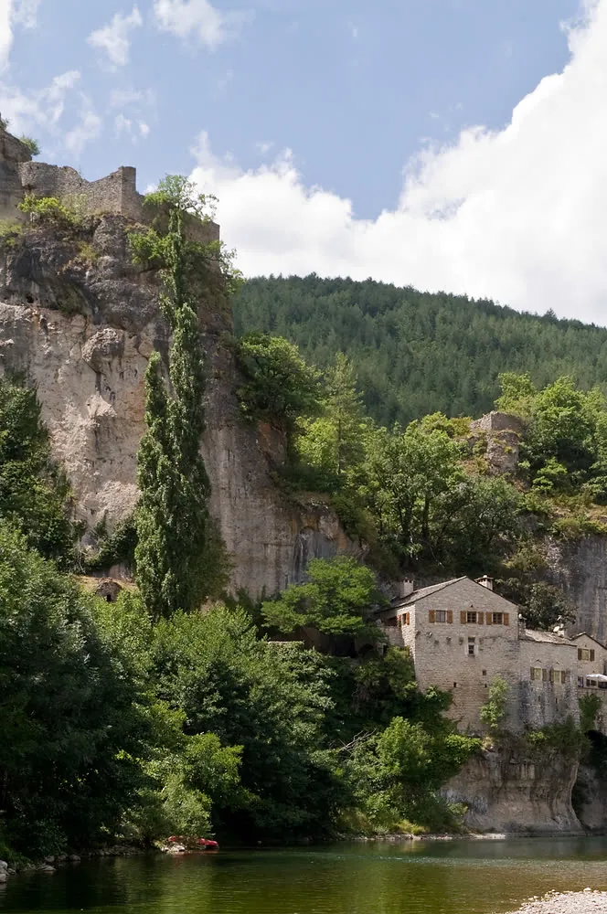
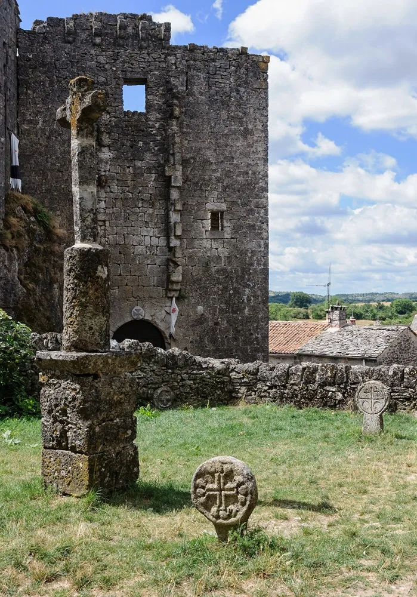
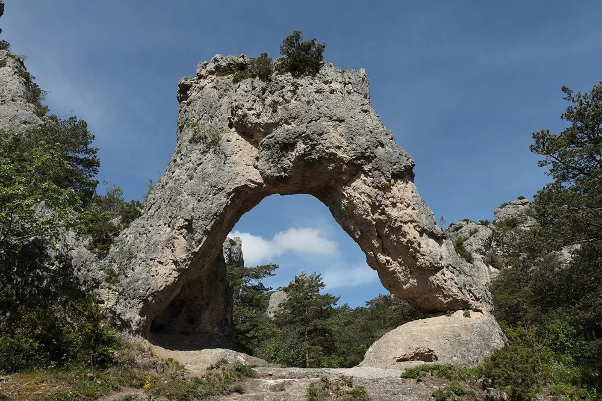
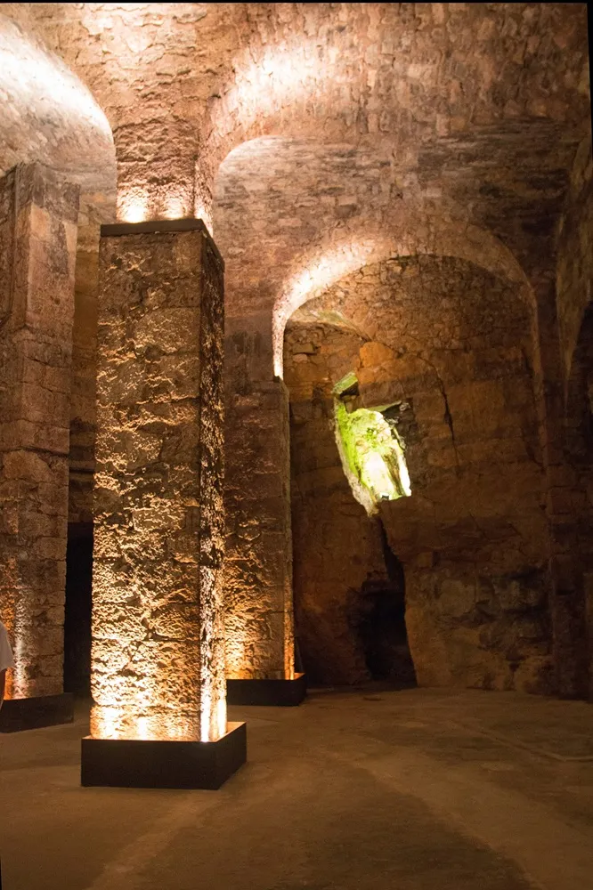
Posé à 343 m au-dessus du Tarn, le viaduc de Millau est l'ouvrage le plus spectaculaire d'Aveyron. On l'admire depuis l'aire de vision et son belvédère, gratuits et ouverts toute l'année.
˜ 35 min de Nant Photo : Imac.vincent — domaine public, Wikimedia CommonsLe Tarn a creusé ici l'un des plus longs canyons d'Europe. Routes de corniche, belvédères vertigineux et villages accrochés à la falaise : le grand spectacle du Causse.
˜ 55 min de Nant Photo : Myrabella — CC BY-SA 3.0, Wikimedia CommonsCité templière du XIIe siècle posée sur le causse du Larzac, elle a gardé ses remparts, son château et ses ruelles pavées. Un des Plus Beaux Villages de France, inscrit à l'UNESCO.
˜ 30 min de Nant Photo : Myrabella — CC BY-SA 3.0, Wikimedia CommonsSur le causse Noir, l'érosion a sculpté une ville de pierre : arches, remparts et figures géantes. On l'explore à pied, ou en petit train touristique.
˜ 50 min de Nant Photo : Benh Lieu Song — CC BY-SA 3.0, Wikimedia CommonsDans les entrailles du Combalou, à 10 °C toute l'année, s'affinent les célèbres fromages. La visite guidée des caves Société se termine par une dégustation.
˜ 30 min de Nant Photo : Daniel Villafruela — CC BY-SA 3.0, Wikimedia CommonsAu départ du village, 8 boucles balisées dans les Grands Causses : de la promenade en famille le long de la Dourbie à la grande journée sur le plateau du Larzac.
Le Camping Les 2 Vallées est né de l'amour d'une famille pour la nature. Au fil des décennies, la structure s'est développée en symbiose avec le territoire, conservant cet esprit d'ouverture et de respect du vivant.
Aujourd'hui encore, porté par de nombreuses innovations en matière d'hébergement, le camping est une étape fixe pour ceux qui veulent régénérer leur corps et leur esprit.
Téléchargez tout ce qu'il faut savoir avant votre séjour.
Réglez votre séjour en toute simplicité.
Merci ! Votre message a bien été envoyé. Nous revenons vers vous très vite.